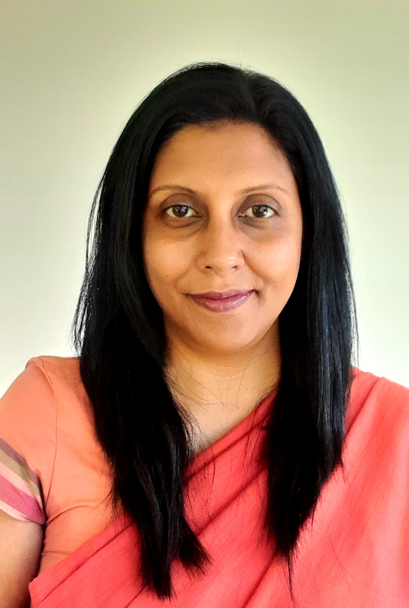

Profile
I have over 17 years of experience across the software industry and academia. I am currently a Faculty Lecturer at the Informatics Institute of Technology, teaching on the Computer Science and Software Engineering degrees. I completed my PhD in Computer Science at the University of Moratuwa in 2025.
My research is in Natural Language Processing, focusing primarily on low-resource languages, with broader interests across Artificial Intelligence and Data Science. Earlier in my career I worked as a Senior Project Manager and a QA Manager, leading large-scale software projects for international clients — giving me a blend of academic depth and industry experience.
Research Interests
- Natural Language Processing for low-resource languages (Sinhala, Tamil)
- Neural Machine Translation and parallel corpus mining
- Agentic AI for NLP / Larget Language Models (LLMs)
- Multilingual pre-trained language models and cross-lingual representation
- Machine Learning, Deep Learning and Data Science